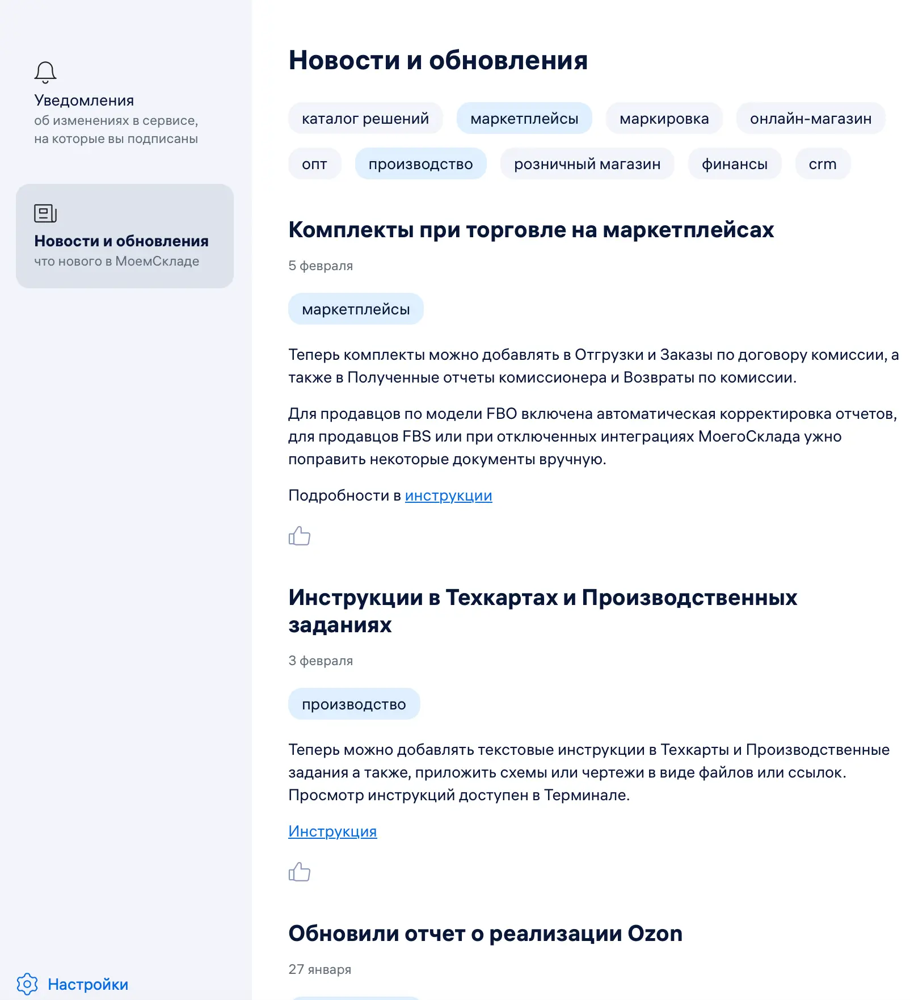
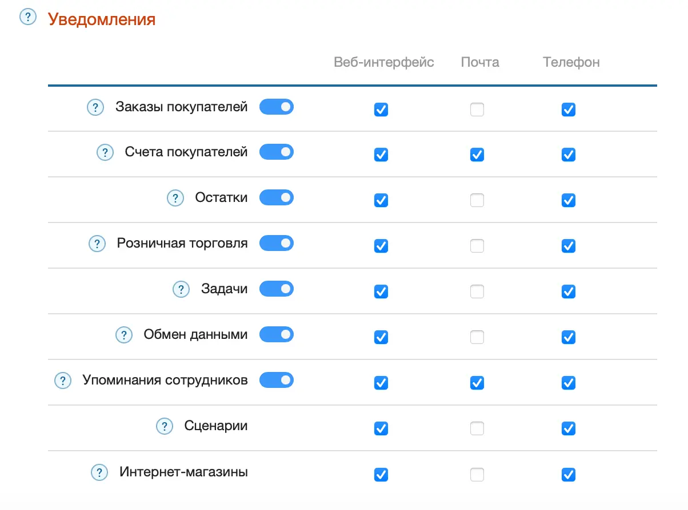
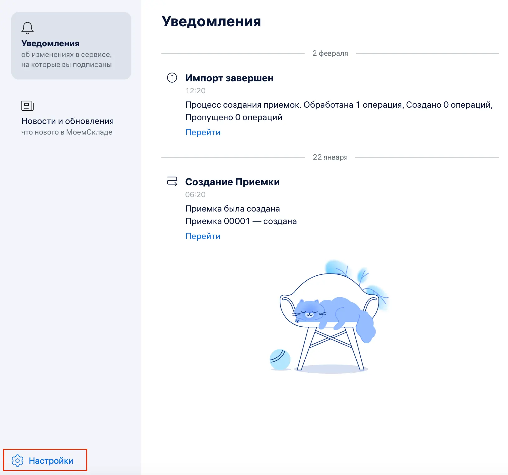
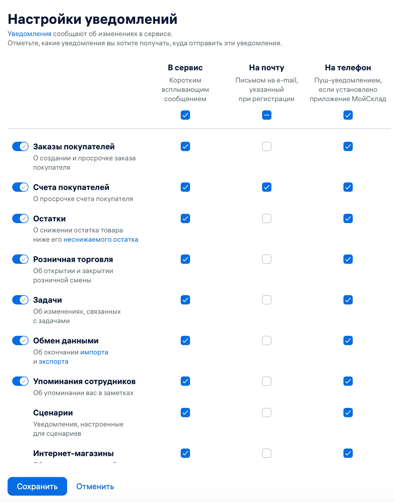

В МоемСкладе можно просматривать новости и уведомления об изменениях в сервисе.
С помощью настроек можно выбрать, уведомления о каких изменениях вы хотите получать. Например, о новых заказах, выставленных счетах, результатах импорта.
Новости и уведомления доступны в веб-версии и мобильном приложении МоегоСклада.
Лента новостей и уведомлений
Новости и уведомления собраны в ленте уведомлений. Чтобы открыть ленту:
- Нажмите на колокольчик справа вверху.
- Выберите вкладку Уведомления или Новости и обновления:
- Новости в ленте можно сортировать по тематике с помощью тегов — сначала отображаются новости на выбранные темы. Например, маркетплейсы, производство.
- Уведомления можно просматривать в ленте, а также получать в виде коротких сообщений в интерфейсе, во всплывающих подсказках в браузере, по электронной почте или через пуш-уведомления, если у вас установлено мобильное приложение МоегоСклада. Вы сами можете настроить удобный способ и тематику уведомлений.

Настройка уведомлений
Настроить уведомления можно в настройках пользователя и в ленте уведомлений.
Чтобы настроить уведомления в настройках пользователя:
- Перейдите в раздел Меню пользователя → Настройки пользователя.
- В разделе Уведомления установите переключатели в строках в нужное положение:
- переключатель синего цвета — уведомления включены;
- переключатель прозрачный — уведомления отключены.
- Отметьте галочками, как вы хотите получать уведомления:
- Почта — на электронную почту;
- Телефон — во всплывающих подсказках в смартфоне.

- Нажмите на кнопку Сохранить вверху. Уведомления начнут поступать через 5-10 минут после обновления.
Чтобы настроить уведомления в ленте уведомлений:
- Нажмите на колокольчик справа вверху, чтобы открыть ленту уведомлений.
- В открывшемся окне выберите Настройки — откроется окно настройки уведомлений.

- Отметьте, какие уведомления и каким способом вы хотите получать.

- Нажмите на кнопку Сохранить. Уведомления начнут поступать через 5-10 минут после обновления.
Дополнительные уведомления можно настроить с помощью Сценариев. Например, можно создать сценарий на отправку уведомления сотрудникам при определенных обстоятельствах — если срок выполнения заказа истек или оплата прошла успешно.